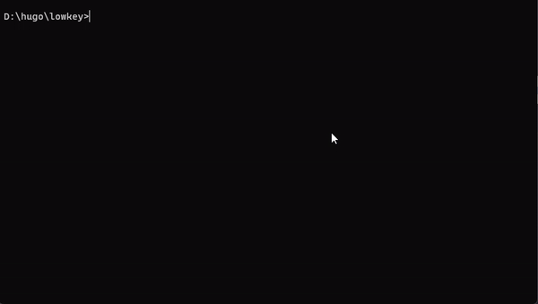

HUGO 사이트 배포를 위한 배치 파일 생성
블로그를 Github 에 commit 하기 위해서는 우선 hugo 빌드를 수행하고 git add 명령어 및 커밋 메시지 작성후 push를 해야 합니다. 이 과정은 몇 번의 command 명령어를 입력해야 하기 때문에 귀찮고 번거로운 작업이 됩니다. 이 포스트에서는 이러한 과정을 배치 파일을 생성하여 한번의 명령어로 처리하는 방법을 소개하겠습니다.
배치 파일 생성
hugo 블로그 프로젝트 루트에 commit.bat 파일을 생성합니다.
hugo --cleanDestinationDir
@echo off
set /p commit_message=Enter your commit message:
cd ./public
git add .
git commit -m "%commit_message%"
git push origin main
cd ..
소스 설명
hugo --cleanDestinationDir- hugo 명령어로 빌드를 하면 public 폴더에 최종 파일이 빌드되어 생성되는데 hugo는 새로운 파일에 대해서 추가만 합니다. 쓰고 지우는 과정에서 구조가 바뀔 수 있는데 추가만 하므로 사용하지 않는 파일들이 쌓일 수가 있습니다. –cleanDestinationDir 옵션으로 public 폴더를 완전히 청소후 빌드를 수행합니다.
set /p commit_message=Enter your commit message:- 커밋 메시지 입력을 받도록 설정합니다. 입력한 커밋 메시지는 commit_message 변수에 세팅됩니다.
cd ./public- public 폴더로 이동합니다.
git add .- public 폴더의 모든 파일을 add 합니다.
git commit -m "%commit_message%"- 작성된 커밋 메시지로 commit 을 수행합니다.
git push origin main- push 처리합니다.
cd ..- 원래 있던 폴더로 이동후 종료합니다.
배치 파일의 내용은 각자의 상황의 맞게 변경해서 활용하시면 편리하게 블로그 배포를 진행하실 수 있을겁니다.
배치 파일 실행
프로젝트 루트에서 commit 명령어를 실행하세요.
